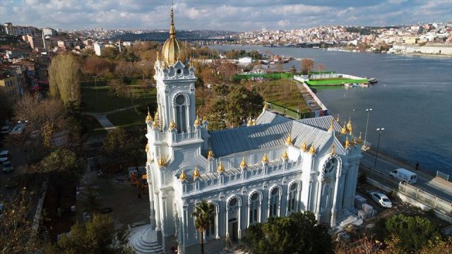
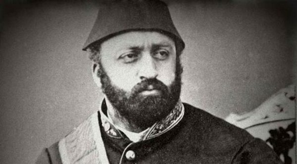
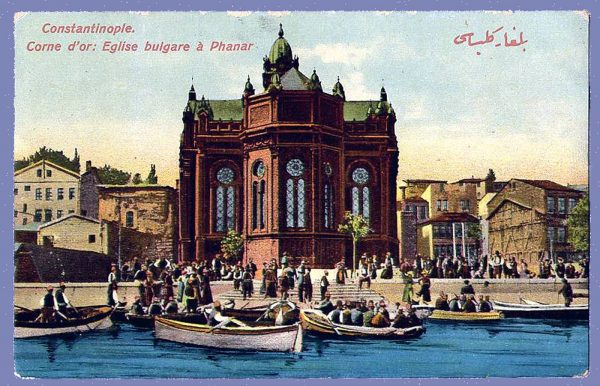
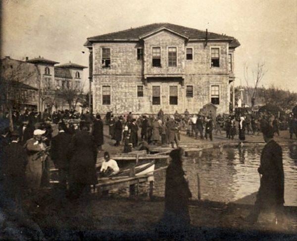
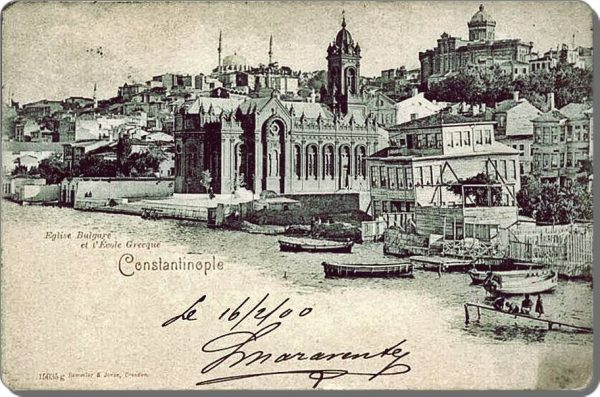
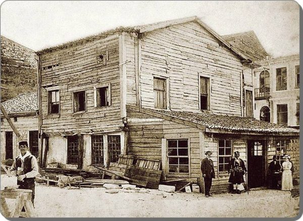
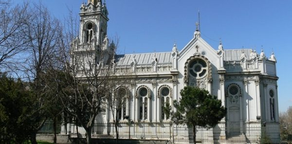
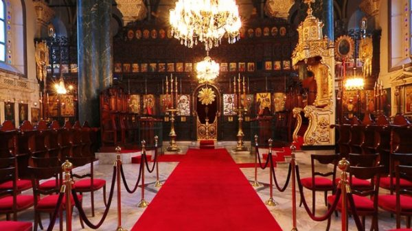
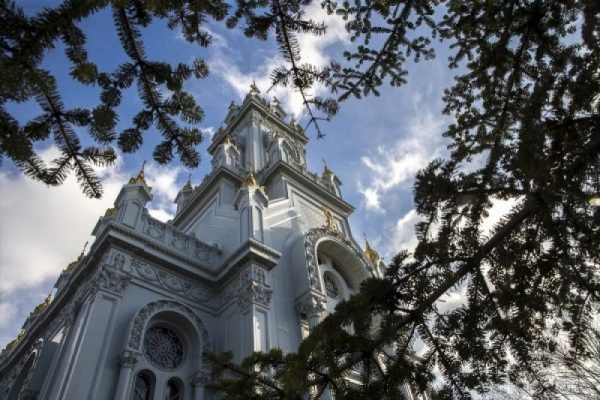

Aya İstefanos Kilisesi (Bulgar Kilisesi)
 AçıklamaAdeta birer mezar taşı gibi yükselen beton yığınlarının, bilmem kaç yıldızlı alışveriş merkezlerinin ve gökdelenlerin semalarını kapladığ, dünyanın en güzel şehirlerinden biri olan mahzun İstanbul’un bir köşesinde kalmış mücevherlerinden biridir Sveti Stefan Kilisesi. Haliç’in mavi sularının kıyısında, Ortodoks Bulgar Cemaati tarafından 120 yıl önce inşa edilmiş olan, Nam-ı diğer Demir Kilise “Hoşgörü bizim geleneğimizde var” sloganıyla uzun bir restorasyon sürecinden sonra yeniden açıldı. Biz de İstanbul’un incilerinden olan bu zarif kiliseyi, yapılış öyküsünü anlatarak tanıtalım istedik.
 Rivayete göre, İstanbul’da yaşayan Bulgarlar 19. yüzyılda Rum Patrikhanesinden ayrılarak kendileri için bağımsız bir kilise yaptırmak isterler. Zamanın Osmanlı padişahına isteklerini arz ederler. Fakat Sultan Abdülaziz, Bulgarların Fener Patrikhanesi’nden bağımsız bir kilise yapmalarını istemez. Bulgarların isteklerini doğrudan reddetmemek için de “Kilise inşaatını üç ay içinde bitirmek koşuluyla izin veririm” der.
 Çünkü böyle bir inşaatın o dönemin koşullarında üç ayda bitirilmesi mümkün değildir. Bunun üzerine Bulgarlar kiliseyi, Viyana’da demirden döktürüp, sonra da Tuna Nehri ve Karadeniz üzerinden taşıyarak Haliç’in kıyısına üç ay içinde kurarlar. Kilisenin söz verildiği sürede bittiğini gören Sultan Abdülaziz de verdiği sözü tutmak zorunda kalır. Dilden dile anlatılarak günümüze gelen ve ilgi uyandıran bu rivayetle ilgili yazılı bir belge olmadığı gibi, böyle bir kilisenin üç ay gibi kısa bir sürede inşa edilmesi de mümkün olmadığına göre gerçek hikayeyi anlatalım.
 O dönemde İstanbul’daki Ortodoks kiliselerinde Rumca ayin yapılmaktadır. Bu nedenle İstanbullu Bulgarlar kendi dillerinde ayin yapabilmek için Fener Rum Patrikhanesi’nden bağımsız bir kilise kurmak isteseler de Patrikhane Bulgarların bu isteğine karşı çıkar. Ancak dönem Panislavizm dönemidir ve Rusya’yı arkasına alan genç Bulgar devleti, Osmanlı üzerinde bir güç gösterisi yapmayı arzulamaktadır.
 1849’da Osmanlıdaki Bulgar cemaatinin ileri gelenlerinden ve o dönemde milletvekili olan Stefan Vogoridis, Bâb-ı Âli’den bir kilise yapılması için izin alır. Kilisenin yapımı için de ikisi kagir, biri ahşap üç bina ve geniş bir avlusu olan 25 odalı evini hibe eder.
 Böylece 1850 de Bulgar Eksarhlığı (önderliği) açılır. Eksarhlığın tam karşına da ahşap bir kilise yapılır ve kiliseye bağışçının adına ithafen Sveti (Aziz) Stefan adı verilir. Bulgarlar on yıl sonra artık Fener Rum Patriğini dini önder olarak kabul etmeyeceklerini deklare ederler. Bunun üzerin Fener Rum patriği 1872’de Bulgarları aforoz eder. Bulgarlar da ahşap kilisenin yerine daha büyük ve gösterişli bir kilise yapma iznini Osmanlıdan alırlar. Her şeyi demirden yapılan kilise  İzni alan Bulgarlar bu kilisenin inşası için bir proje yarışması açarlar. Yarışmayı Ermeni mimar Hovsep Aznavur, ihaleyi de Avusturyalı Rudolf Waagner Şirketi kazanır. Kilisenin inşası 1,5 yıl sürer. Kilisenin bütün dış cephesi, yan duvarları, pencere kenarları, merdivenleri, kabartmaları, çan kulesi neredeyse hemen her şey demirdendir, bu yüzden kilise Demir Kilise olarak da ünlenir.
 Neo-gotik ve Neo-barok stilde inşa edilen kilisenin sadece mihrap kısmı ağaçtan yapılır ve altın kaplanır. Kilisenin ikonaları için Moskovalı bir fabrikatör ile sözleşme imzalanır ve ressam Lebedev de bu ikonaları resmeder. Kilisenin kulesinde bulunan ve en büyüğü 400 kilo civarında olan altı çan ise Rusya’da dökülür. Dünyadaki tek örnek  Zamanında tüm dünyada sadece 2 adet olan demir kiliselerden diğeri zamanla yok olunca Balat’taki Sveti Stefan Kilisesi dünyadaki tek demir kilise olarak kalır. Üç kubbeli ve haç şeklinde olan kilise, dış süslemelerinin zenginliği ile de dikkatleri üzerine çeker. Mihrabı Haliç’e dönüktür. Çan kulesi giriş kapısının üzerinde ve 40 metre yüksekliğindedir. 9 yıldır restorasyon nedeniyle kapalı olan Demir Kilise 7. Ocak 2018’de yeniden ibadete ve ziyarete açıldı. Yolunuz Haliç taraflarına düşerse bu ilginç ve güzel kiliseyi görmenizi tavsiye ederiz. |
|
Yaz Dönemi 1 Nisan - 31 Ekim Açılış Saati: 09:00 Kapanış Saati: 17:00 |
Kış Dönemi 31 Ekim - 1 Nisan Açılış Saati: 09:00 Kapanış Saati: 17:00 |
|
Gişe Yaz / Kış Kapanış Saatleri Yaz Dönemi: 17:00 Kış Dönemi: 17:00 |
Adres: Balat, Mürselpaşa Cd. No:10, 34087 Fatih/İstanbul |
|
Kapalı Günler: Her gün açıktır. |
Giriş Ücreti : Ücretsiz |